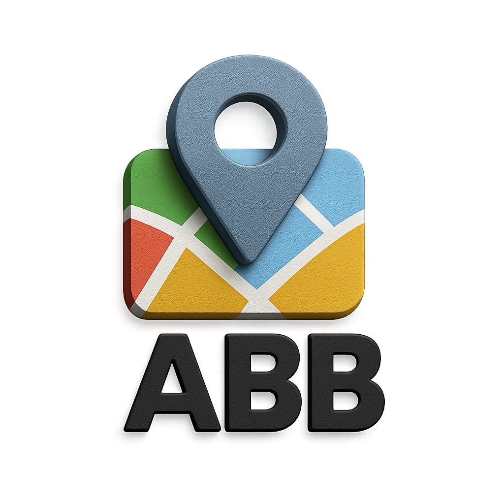

Menu
Come funziona?
Gallery
1. Analisi Demografica
2. Analisi Funzionale
3. Analisi Tipologica
4. Analisi Storica
5. Vincoli Regione Toscana
6. Vincoli di Inedificabilità

T.U. Project: Marina di Pisa